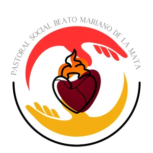
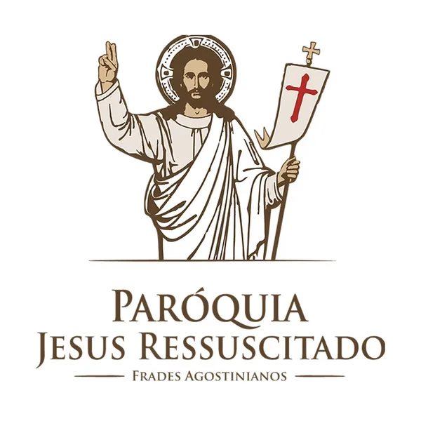

Pastoral Social Beato Mariano Della Mata
Distribui cestas básicas para mais de 100 famílias que moram no território da paróquia. A entrega acontece todo primeiro domingo do mês.
Responsável: Débora

Igreja ou instituição religiosa
Atua na Cidade Satélite Santa Bárbara, região de São Mateus, Zona Leste de São Paulo
A Paróquia Jesus Ressuscitado mantém obras sociais voltadas ao acolhimento e à assistência de famílias e pessoas em situação de vulnerabilidade. O trabalho é feito por meio de pastorais, projetos e campanhas de arrecadação.
Criação oficial da paróquia, em 16 de novembro.
Lançamento da pedra fundamental da igreja, em 25 de dezembro.
Inauguração e consagração da igreja, em 21 de dezembro, em celebração presidida pelo Cardeal Dom Paulo Evaristo Arns.
A administração da paróquia passa à Ordem de Santo Agostinho, que atua no local desde então.
Mantém três obras sociais e campanhas permanentes de arrecadação, atendendo mais de 100 famílias com cestas básicas.
Quem inspira a Pastoral Social
Frade agostiniano espanhol que viveu mais de 50 anos no Brasil, dedicado aos pobres, aos doentes e às crianças. Foi assistente das Oficinas de Caridade de Santa Rita, em São Paulo, e dá nome à Pastoral Social da paróquia.

Distribui cestas básicas para mais de 100 famílias que moram no território da paróquia. A entrega acontece todo primeiro domingo do mês.
Responsável: Débora
Apoia mães gestantes e famílias com crianças pequenas, com a entrega de enxovais para gestantes e de roupas doadas para as crianças.
Responsável: Íris
Empresta ou doa materiais de apoio à saúde e à mobilidade, conforme a disponibilidade: cadeiras de rodas, cadeiras de banho, camas hospitalares, muletas, fraldas geriátricas e outros itens para pessoas enfermas ou com mobilidade reduzida.
Responsável: Ilda
Famílias em situação de vulnerabilidade que moram no território da paróquia, gestantes e famílias com crianças pequenas, e pessoas enfermas ou com mobilidade reduzida.
Leve alimentos não perecíveis à Matriz ou às capelas. Eles viram as cestas básicas entregues às famílias.
Os materiais são vendidos e o valor é usado na compra de alimentos para as ações sociais da paróquia. O que está sendo arrecadado: tampinhas plásticas e latinhas de alumínio.
O óleo é vendido e o valor ajuda a manter as obras sociais da paróquia. A campanha também evita o descarte incorreto do óleo. O que está sendo arrecadado: óleo de cozinha usado.
Novidades e campanhas pontuais são publicadas no Instagram da paróquia.
Ver Instagram (abre em nova aba)Registros das ações
Em janeiro, a Pastoral Social Beato Mariano de la Mata entregou 126 cestas básicas a famílias do território da paróquia. As cestas são montadas com os alimentos arrecadados na Matriz e nas capelas.
Informações conferidas com a iniciativa em novembro de 2026.
Ajuda a montar as cestas básicas entregues todo primeiro domingo do mês. Fale com a secretaria para saber quais itens estão faltando.
Roupas infantis e itens de enxoval são entregues a gestantes e famílias com crianças pequenas pela Oficina de Caridade de Santa Rita.
Cadeiras de rodas, cadeiras de banho, camas hospitalares, muletas e fraldas geriátricas ajudam a Obra Social Bom Samaritano a atender mais pessoas. Confirme com a responsável antes de levar.
Separe em casa e entregue na paróquia. O valor da venda vira alimento e apoio às obras sociais.
Feita diretamente pelos canais oficiais da paróquia. O Voluntee não recebe doações.
Compartilhe as campanhas da paróquia com amigos e vizinhos.